Aphrodite
Seashell · Love and beauty
Room · 4 guestsA visual identity and digital experience for a garden stay in Analipsi, Messenia.
The idea
Six rooms and apartments carry the names of Greek gods. The new identity gives each a symbol of its own and brings them together through the forms of classical Greece and the colors of the Messenian garden.
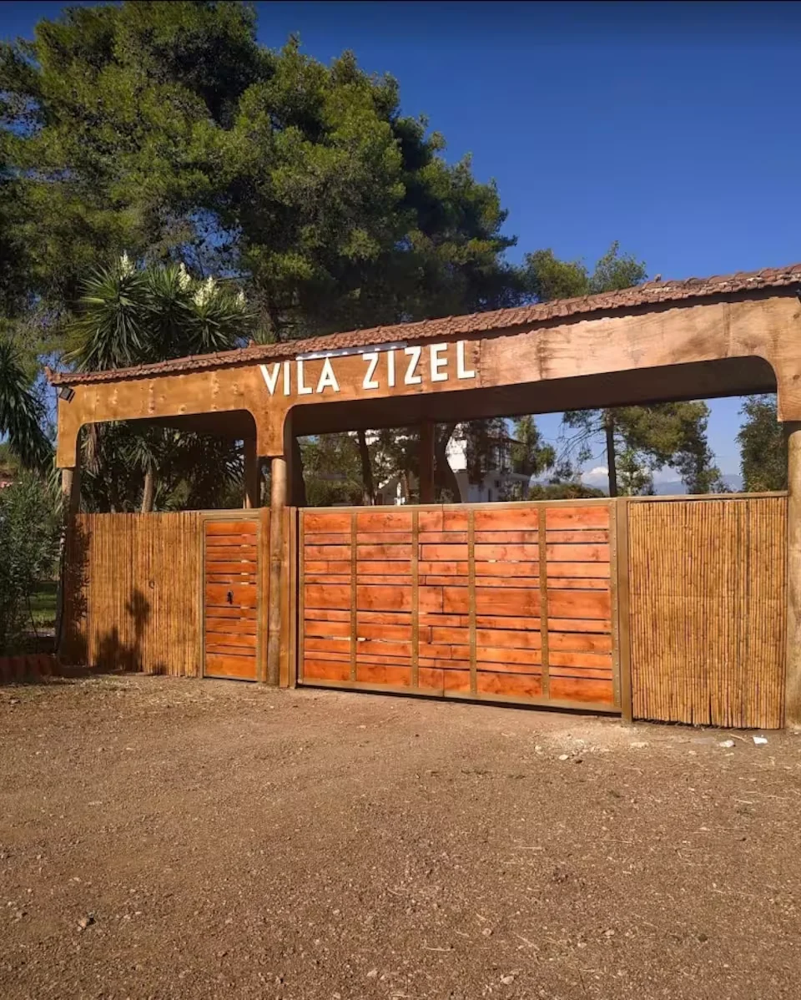
The paired curls of an Ionic capital frame an olive shoot. The capital gives the mark its structure, and the olive connects the garden with the story of Athina. The custom serif wordmark spells the property’s established name, Vila Zizel.
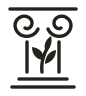
Keep a quarter of the emblem height clear on each side of the full logo or standalone mark.
Horizontal 148 px / 35 mm. Stacked 96 px / 25 mm. Standalone mark 28 px / 8 mm.
Use the one-color olive or limestone master. Choose a quiet ground with strong contrast and use the original proportions.
Garamond · Regular and italic
A slower morning.
Display headlines and room names · 56–125 px desktop, 48–72 px mobile · Baskerville and Times New Roman fallbacks.
Segoe UI · System sans
Handmade rooms
near the coast.
Body 16 px / 1.6 · Controls 13 px semibold · Short labels 11 px with tracking. Proof Greek glyphs and longer translations when the typefaces are set for production.
Against Limestone, Olive Ink is 13.76:1, Olive Leaf 6.96:1 and Bay 7.96:1. Reserve Brass on Limestone for rules and decoration. On dark sections, use Pale Brass #D9BE94 for small accents and Limestone for body text.
The same thin line and circular setting make each symbol part of the family. Pair the symbol with the accommodation name on cards, signs and keys.
Seashell · Love and beauty
Room · 4 guestsThunderbolt · The sky
Apartment · 4 guestsBow · The hunt
Room · 2 guestsPeacock feather · Queen of the gods
Room · 3 guestsOlive sprig · Wisdom and craft
Room · 2 guestsTrident and double wave · The sea
Unit · 6 guests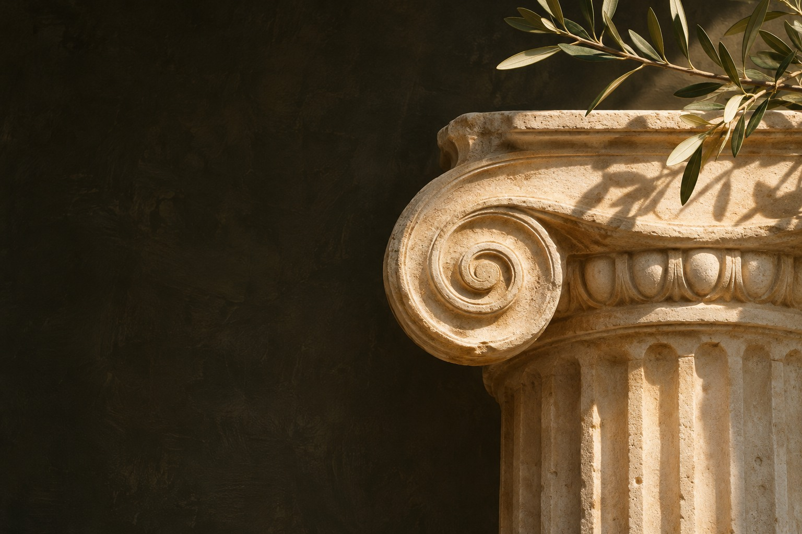
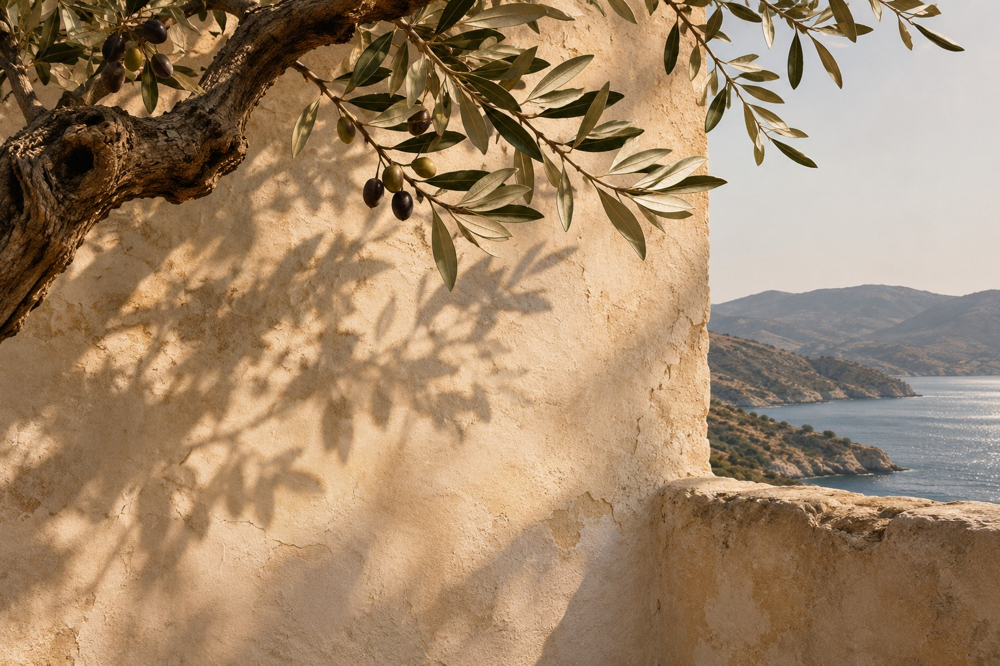
Property photography
Use daylight property images for rooms, amenities and arrival. Keep believable colors and show a wide shot, the bed, the kitchen and any private outdoor space.
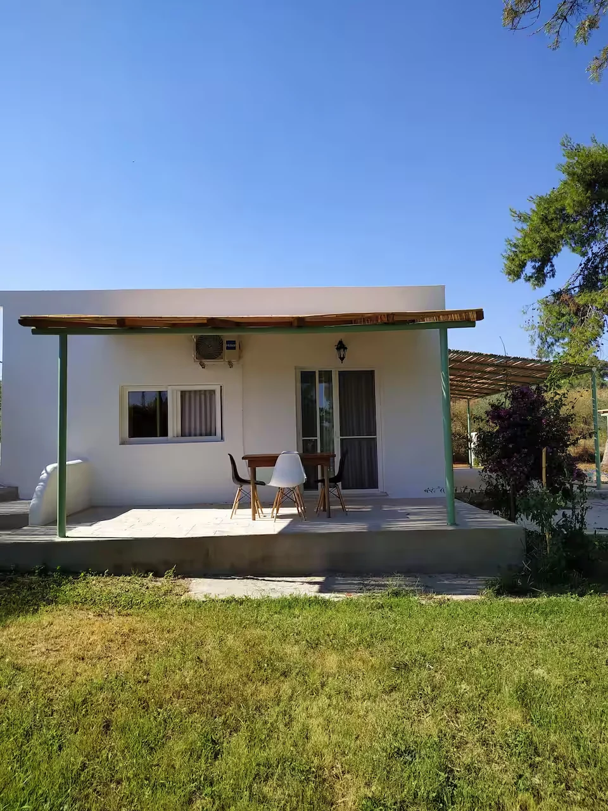
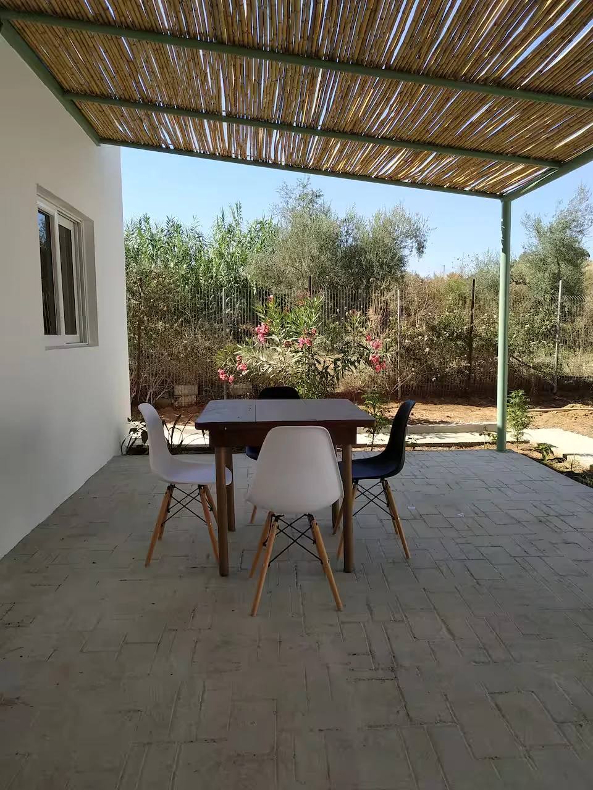
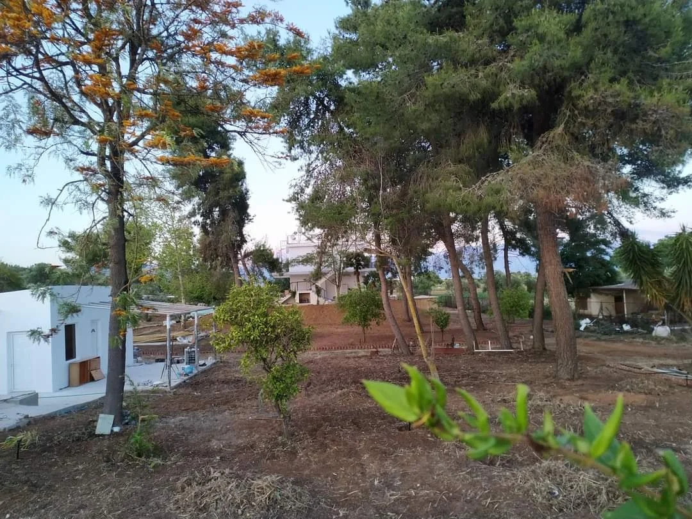
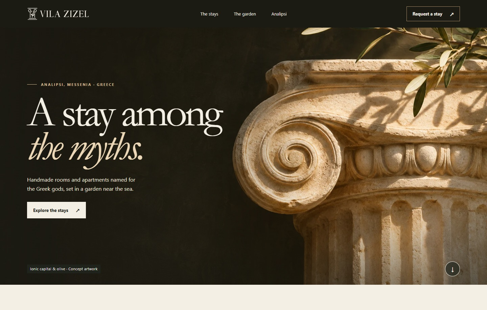
Responsive design
The column crop moves above the copy. Guests can open the menu, narrow the collection by capacity, or request a stay from the bottom bar.
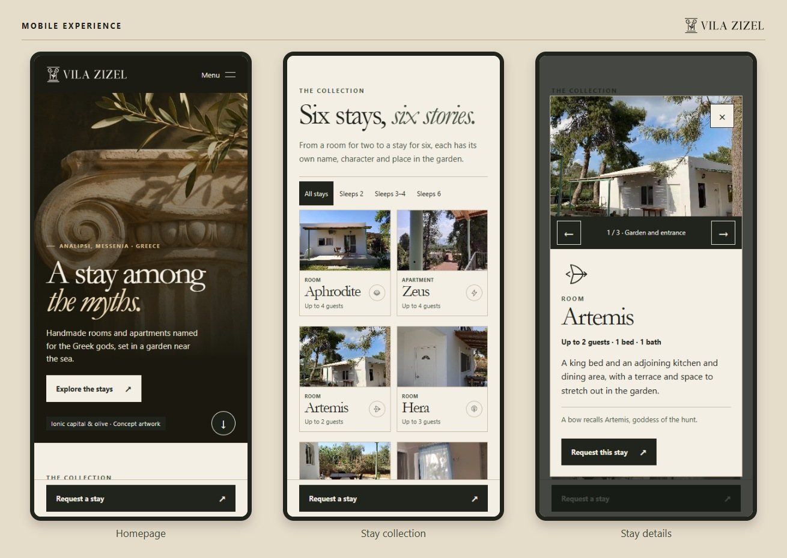
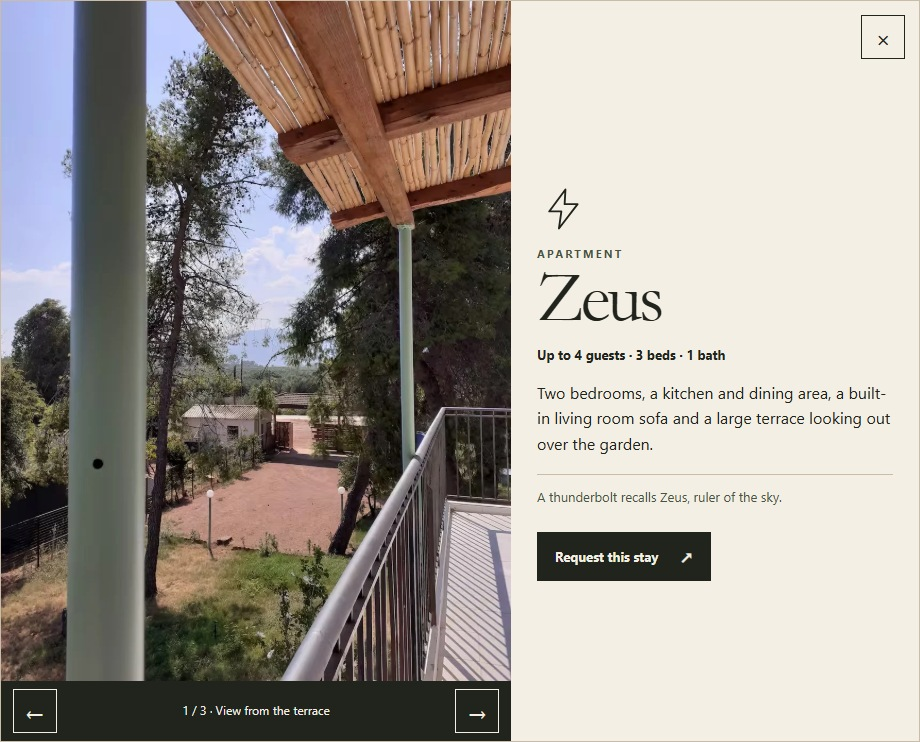
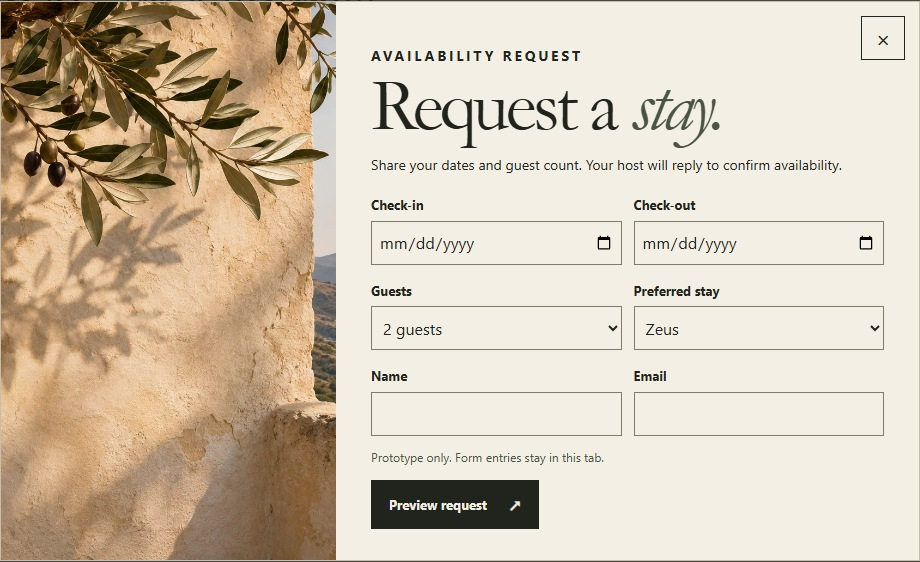
Production copy after a successful submission: “Request received. Your host will reply about availability.” If sending fails, keep the entries and offer retry, email and phone.
A short rise brings copy into view. Hover draws the eye to the active stay. The reading order, room facts and actions are available with touch, keyboard and reduced motion.
| Element | Behavior | Timing | Keyboard, touch & reduced motion |
|---|---|---|---|
| Hero title | 12 px rise and light fade on arrival. | 650 ms | Hero content appears immediately with reduced motion. |
| Scroll reveal | Section headings and feature groups rise 16 px, once, at 12% in view. | 530 ms | Focused content is visible. Reduced motion shows sections immediately. |
| Stay card | Photo zooms to 104.5%. The emblem fills with Sand and the border deepens. | 650 ms zoom 260 ms color | Focus uses an outline and emblem fill. Tap opens details directly. |
| Links & actions | Navigation underline draws in. Action arrow shifts up and right by 3 px. | 220–250 ms | Focus ring identifies the active control. The arrow stays still with reduced motion. |
| Gallery & inquiry | Dialog fades and rises 12 px. The gallery advances on command. | 300 ms dialog | Escape closes. Focus returns to the trigger. Photo arrows stay available. |
Use ease-out cubic-bezier(.22, 1, .36, 1). Scroll stays native. Motion plays once, and every effect has a static state.
At the property
A limestone welcome card, an olive-ink key sleeve and a brass-toned room tag bring the same identity to the check-in experience.
Use the horizontal logo on the entrance sign. On room signage, set the stay name beside its emblem and carry that pairing through to the key.
Welcome to Analipsi.

 Vila Zizel
Vila ZizelProperty review used the local Vila Zizel homepage, room catalog, imagery and request flow. Design references include The Met’s Greek architecture essay, its notes on divine attributes and Zeus and Poseidon, Amanzoe and Dexamenes for regional hospitality context, and WCAG 2.2.